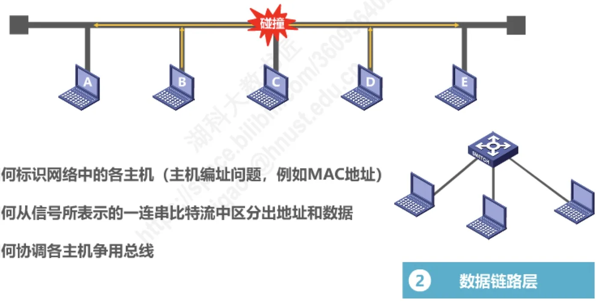
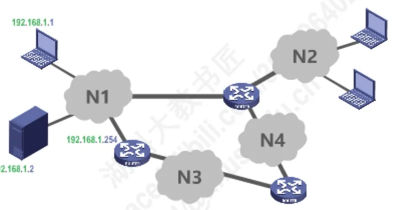

计算机通信与网络 · 第 1 章 概述
1.6 计算机网络体系结构（2）—分层的必要性
上一节我们看到有三种网络体系结构，可为什么非得「分层」不可？本节回答这个问题。计算机网络是个非常复杂的系统，早在最初的 ARPANET 设计时就提出了分层设计的理念。下面我们按照由简单到复杂的顺序，看看实现计算机网络究竟要面对哪些主要问题，以及这些问题怎样被划分到相应的层次上去层层处理。
1. 分层的必要性
计算机网络是个非常复杂的系统：它要连接五花八门的设备，要在各种各样的介质上传输信号，要让无数互不相识的进程彼此协作。这样一个庞然大物，不可能作为一个整体一次设计完成。
早在最初的 ARPANET 设计时，人们就提出了分层设计的理念。它的核心思想一句话就能说清：「分层」可将庞大而复杂的问题，转化为若干较小的局部问题，而这些较小的局部问题就比较易于研究和处理。
那么，究竟有哪些「局部问题」？下面我们由简单到复杂，一层一层地提出来 —— 每提出一组问题，就得到一个层次。
2. 从物理层到应用层：逐层提出的问题
（1）物理层要解决的问题
最底层面对的是最物质化的问题。两台计算机要通信，首先得把它们连起来：
- 采用怎样的传输媒体（介质）？双绞线、光纤还是无线？
- 采用怎样的物理接口？接口的形状、引脚、电气特性如何规定？
- 使用怎样的信号来表示比特 0 和 1？
这些问题都围绕「怎样在传输媒体上传送比特」展开，把它们归到一起，就构成了物理层。
（2）数据链路层要解决的问题
比特能传了，但一条线路上往往挂着多台主机，于是新问题出现了：
- 如何标识网络中的各主机？这就是主机编址问题，例如使用 MAC 地址；
- 如何从信号所表示的一连串比特流中区分出地址和数据？
- 如何协调各主机争用总线？多台主机同时发送就会发生碰撞，必须有规则来仲裁。
这些问题都限定在「一个网络（或一段链路）内部」，把它们归到一起，就构成了数据链路层。

（3）网络层要解决的问题
数据在一个网络内部能传了，可因特网是「网络的网络」，数据要跨过多个网络：
- 如何标识各网络以及网络中的各主机？这是网络和主机共同编址的问题，例如使用 IP 地址 —— 地址里既要包含「你在哪个网络」，也要包含「你是这个网络里的哪台主机」；
- 路由器如何转发分组，如何进行路由选择？分组到达路由器后该往哪个方向走，路径又该如何选出来？
这些问题关乎「分组在多个网络之间怎样传输」，把它们归到一起，就构成了网络层。

（4）运输层要解决的问题
分组能跨网络送达了，但真正通信的并不是「主机」这个整体，而是主机里运行的一个个进程（例如浏览器和服务器上的 Apache）：
- 如何解决进程之间基于网络的通信问题？数据到了主机，该交给哪一个进程？
- 出现传输错误时如何处理？底层链路可能出现误码，收到的分组可能出错或丢失，谁来负责补救？
这些问题把通信的主体从主机细化到了进程，把它们归到一起，就构成了运输层。
（5）应用层要解决的问题
最后还剩一层：网络把数据送到了正确的进程，可这些数据到底是干什么用的？这就落到最后一个问题上：如何通过应用进程间的交互来完成特定的网络应用？例如支持万维网应用的 HTTP 协议、支持电子邮件的 SMTP 协议、支持文件传送的 FTP 协议。
这类问题与应用本身直接相关，把它们归到一起，就构成了应用层。
3. 五个层次各自的职责
把上面逐层提出的问题汇总起来，就得到了原理体系结构五层的分工：
| 层次 | 解决的问题 |
|---|---|
| 应用层 | 解决通过应用进程的交互来实现特定网络应用的问题 |
| 运输层 | 解决进程之间基于网络的通信问题 |
| 网络层 | 解决分组在多个网络上传输（路由）的问题 |
| 数据链路层 | 解决分组在一个网络（或一段链路）上传输的问题 |
| 物理层 | 解决使用何种信号来传输比特的问题 |
请注意这个顺序的价值：每一层只解决一个相对单纯的局部问题，同时使用下一层提供的服务、为上一层提供服务。这样一来，一个复杂到无法整体把握的系统，就被拆成了五个可以分别研究和处理的局部问题 —— 这正是「分层」的意义。下一节将通过一个具体的通信过程，看看这五层是怎样协同工作的。
本节小结
- 计算机网络是非常复杂的系统，ARPANET 设计之初就提出了分层设计理念；分层的本质是把庞大复杂的问题转化为若干较小的局部问题，便于分别研究和处理；
- 物理层解决「使用何种信号来传输比特」：采用怎样的传输媒体、怎样的物理接口、怎样用信号表示比特 0 和 1；
- 数据链路层解决「分组在一段链路（一个网络）上传输」：如何标识各主机（如 MAC 地址）、如何从比特流中区分地址和数据、如何协调各主机争用总线；
- 网络层解决「分组在多个网络上传输（路由）」：如何用 IP 地址标识各网络与主机、路由器如何转发分组与进行路由选择；
- 运输层解决「进程之间基于网络的通信」：如何把数据交给正确的进程、出现传输错误时如何处理；
- 应用层解决「通过应用进程交互实现特定网络应用」，如 HTTP、SMTP、FTP。